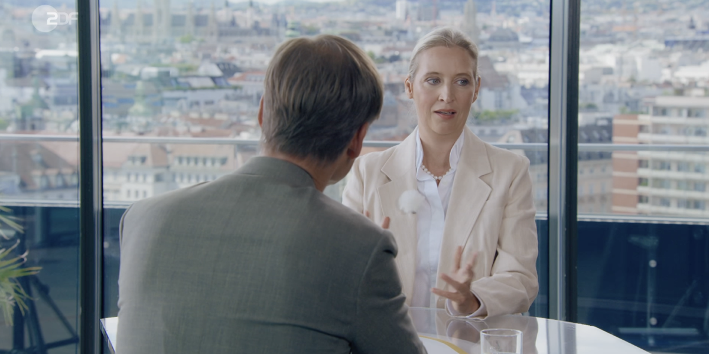

ZDF unterbricht. Weidel gewinnt.

Wulf Schmiese übernimmt im Hauptteil des ZDF-Sommerinterviews 28-mal nach einer Weidel-Passage das Wort. Mehrfach bricht er begonnene Antworten ab, wird persönlich und stellt selbst fragwürdige Behauptungen auf. Alice Weidel bleibt ruhig. Damit läuft die Vorführung ins Leere.
Zwischen Minute 4:30 und 19:37 verzeichnet das offizielle ZDF-Untertitelprotokoll 28 Wortübernahmen Schmieses nach einer Weidel-Passage. Darunter befinden sich mehrere eindeutige Unterbrechungen.
Bei Minute 6:33 beginnt Weidel eine Erwiderung. Nach weniger als zwei Sekunden fährt Schmiese dazwischen und erklärt, das Thema „triggert Sie sofort“. Bei Minute 12:54 endet ihre Ausführung zur Kriminalstatistik. Weidel setzt bei Minute 12:58 erneut an. Knapp drei Sekunden später unterbricht Schmiese wieder.
Als sie beim Euro den Schweizer Franken als Vergleich heranzieht, reagiert er mit: „Oh Gott, wenn wir jetzt damit anfangen.“ In der Migrationsdebatte verkündet er: „Sie haben keine Antwort“, während Weidel gerade widerspricht. Zum Ende wirft er ihr „mimosenhaftes“ Verhalten vor. ZDF-Video, offizielle ZDF-Untertitel
Schmiese prüft nicht nur politische Aussagen. Er kommentiert Weidels Emotionen, erklärt ihre Antworten für nicht existent und bewertet ihren Charakter. Der Ton ist konfrontativ und persönlich.
Weidel spielt die ihr zugedachte Rolle nicht. Sie bleibt kontrolliert, weist die Spitzen zurück und kehrt zu ihren Argumenten zurück. Je schärfer Schmiese auftritt, desto beherrschter wirkt seine Gesprächspartnerin.
Der Faktencheck vergaß den Frager
Nach der Sendung nehmen drei ZDF-Autoren Weidels Aussagen auseinander. Der ZDF-Faktencheck prüft ausschließlich den Gast.
Dabei hätte es bei Schmiese selbst genug zu überprüfen gegeben:
- Der deutsche Autoexport nach China sei weggefallen: falsch.
- China wolle keine Verbrenner mehr: falsch.
- China wolle ausschließlich Elektromobilität: falsch und ohne die staatlichen Kaufanreize betrachtet.
- Deutschland könne keine Elektroautos liefern: unbelegt.
- Abschiebungen setzten Rücknahmeabkommen voraus: rechtlich falsch.
- Ein Schengen-Austritt bedeute automatisch das Ende von Frontex, Rücknahmeabkommen und europäischen Grenzvereinbarungen: unsauber recherchiert.
- In diesem Sommer habe es 12.000 Hitzetote gegeben: als feste Zahl falsch dargestellt; tatsächlich eine Modellschätzung.
- ZF werde fest 14.000 Stellen abbauen: falsche Darstellung der Obergrenze eines Korridors.
- Die meisten Deutschen hielten die Brandmauer für richtig: ohne Umfrage, Prozentwert oder belastbare Quelle behauptet.
- Jedes zweite Auto in Wien sei elektrisch: falsch; der Anteil reiner Elektroautos lag bei 6,1 Prozent.
Die Gegenbelege liefern unter anderem VDA, Chinas Industrieministerium, Chinas Steuerverwaltung, Bundestag, ZF, RKI und Statistik Austria.
Für Weidel gilt die nachträgliche Beweispflicht. Für den Moderator nicht.
Wie das ZDF Politiker anfasst
Der Unterschied zeigt sich bereits in der Präsentation. Grünen-Chef Felix Banaszak begleitet das ZDF auf einer Taxifahrt; das Porträt beschreibt seine sichtbare Freude. Linken-Chef Luigi Pantisano erscheint im Kleinwagen als bodenständiger und lernender Parteivorsitzender.
Bei Weidel beginnt die Rahmung mit ihrer politischen Isolation. Im Interview folgen persönliche Etiketten, psychologische Deutungen und ständige Wortübernahmen. Sachliche Härte wird durch einen feindseligen Ton ersetzt. Banaszak-Porträt, Pantisano-Porträt
Das Ergebnis ist für das ZDF verheerend: Weidel wirkt vorbereitet, schlagfertig und belastbar. Schmiese wirkt zunehmend gereizt und persönlich.
Was das ZDF von Ben lernen könnte
Benjamin Berndts Podcast „ungeskriptet“ folgt einem anderen Prinzip. Die Gespräche sind lang, kaum geschnitten und geben dem Gast genug Zeit, einen Gedanken vollständig auszuführen.
Sein viereinhalbstündiges Gespräch mit Björn Höcke steht bei rund 3,4 Millionen YouTube-Aufrufen. Die sieben ZDF-Sommerinterviews des Jahres 2025 erreichten durchschnittlich 2,24 Millionen lineare Zuschauer. Das erfolgreichste Interview kam auf 2,90 Millionen. YouTube, ZDF-Presseportal
Die Reichweiten werden unterschiedlich gemessen. Das Signal bleibt klar: Millionen Menschen nehmen sich viereinhalb Stunden Zeit, wenn sie ein politisches Gespräch selbst hören und beurteilen können.
Das ZDF hält am Entlarvungsritual fest: unterbrechen, etikettieren und anschließend nur den Gast überprüfen.
Weidel hat sich diesem Zugriff entzogen. Die Vorführung trifft am Ende den Moderator. Sichtbar geworden ist vor allem die Methode des ZDF.